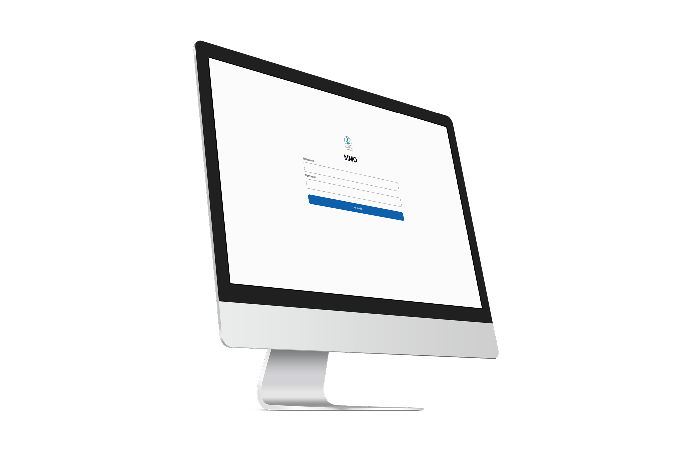

Foundation for Building Interfaces at Scale
The principles and foundations I follow to build consistent, scalable user interfaces.
Read more ↗I'm Han Htet Aung
Designing human-centered interfaces that power daily business operations
The principles and foundations I follow to build consistent, scalable user interfaces.
Read more ↗
An internal portal that uses to run daily operations in hospital.
View Case Study ↗
A personal portfolio to showcase my work, process, and approach to web design and development.
View Case Study ↗
A website for SKS SOLAR (SALES & SERVICES) COMPANY LIMITED to showcase its history, services and completed project.
View Case Study ↗I landed my first software development role building a hospital management system to manage inventory, POS, and OPD appointments. The system is still running today.
I completed my Bachelor of Science in Computer Science at
Assumption University, Thailand. My favorite subject was
Computer Architecture
.
After graduating, I worked remotely for 6 months as a software developer at an event organizing company in Singapore.
Today, I've found my passion in UX design. Self-taught through research and hands-on practice, I design intuitive experiences by simplifying complex workflows.
I'm consistent on one thing: always giving my best. I take pride in doing things properly and take full ownership of everything I do. When I commit to something, I follow through.
I pay close attention to every detail, because the little things matter. I believe the difference between good work and great work lives in the details.
A positive mindset helps me create better work and stronger collaborations. I focus on solutions rather than problems. Good energy builds great work.
I'm looking for a UX Designer role in Singapore where I can simplify complex workflows and design intuitive experiences for enterprise products.
If you're looking for someone who is hardworking, detail-oriented, and positive-minded, then I’m the one for you.
☞ Hire Me ☜